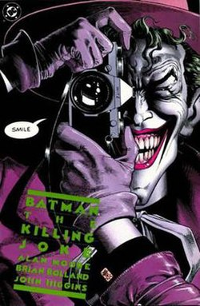
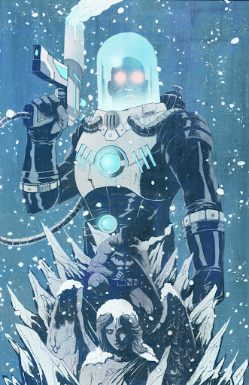
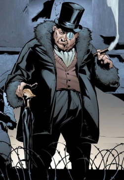
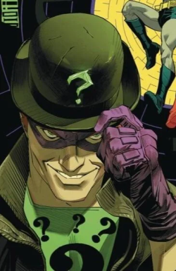
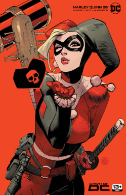

Joker Character Bio
- Name: Joker (Real Name Unknown)
- Height: 6' 0"
- Weight: 160-170 LBS
- First Appearance: Batman #1 (1940)
- Special Abilities: Criminal Mastermind, Expert Chemist, Unpredictable Tactics, High Pain Tolerance, Psychological Manipulation
- Origin: The Joker’s exact past remains a mystery, with multiple conflicting stories. Often depicted as a failed comedian who fell into a vat of chemicals, he emerged with a ghastly grin and unstable mind. The Clown Prince of Crime is Batman’s greatest nemesis, embodying chaos and pushing Gotham into madness through terror and twisted humor.

Mr.Freeze Character Bio
- Name: Victor Fries
- Height: 6' 0"
- Weight: 190-200 LBS (without suit)
- First Appearance: Batman #121 (1959, as "Mr. Zero")
- Special Abilities: Cryogenic Technology Expertise, Freeze Gun Mastery, Genius-Level Scientist, Cryogenic Suit Enhancing Strength and Durability
- Origin: Once a brilliant scientist, Victor Fries turned to crime after a laboratory accident left him unable to survive outside sub-zero temperatures. His crimes are often driven by a tragic devotion to saving his terminally ill wife, Nora, making him one of Batman’s most sympathetic adversaries.

Penguin Character Bio
- Name: Oswald Cobblepot
- Height: 5' 2"
- Weight: 175-200 LBS
- First Appearance: Detective Comics #58 (1941)
- Special Abilities: Criminal Strategist, Weapons Concealed in Umbrellas, Vast Underworld Connections, Skilled Businessman
- Origin: Mocked for his stature and birdlike features, Oswald Cobblepot rose to power as a ruthless crime lord. Known for his love of birds and signature umbrella weapons, Penguin balances Gotham high society with his role as an underworld kingpin, running the Iceberg Lounge as a front for illicit operations.

Riddler Character Bio
- Name: Edward Nigma / Nygma
- Height: 6' 1"
- Weight: 183 LBS
- First Appearance: Detective Comics #140 (1948)
- Special Abilities: Genius-Level Intellect, Puzzle and Code Mastery, Criminal Strategist, Gadgetry
- Origin: Obsessed with proving his superiority, Edward Nigma turned his fixation with riddles and puzzles into a criminal persona. The Riddler tests Batman’s detective skills with elaborate traps and intellectual challenges, making every confrontation a dangerous game of wits.

Bane Character Bio
- Name: Bane (Birthname Not Given)
- Height: 6' 8"
- Weight: 350-400 LBS
- First Appearance: Batman: Vengeance of Bane #1 (1993)
- Special Abilities: Superhuman Strength (via Venom), Master Strategist, Skilled Martial Artist, High Pain Tolerance, Multilingual
- Origin: Born in the brutal Peña Duro prison, Bane was subjected to an experimental drug called Venom, granting him immense strength. Known for his intelligence as much as his brawn, Bane infamously broke Batman’s back during "Knightfall," cementing himself as one of the Dark Knight’s deadliest foes.

Harley Quinn Character Bio
- Name: Harleen Quinzel
- Height: 5' 7"
- Weight: 140 LBS
- First Appearance: Batman: The Animated Series (1992); Comics debut in The Batman Adventures #12 (1993)
- Special Abilities: Skilled Acrobat, Trained Psychiatrist, Unpredictable Fighter, Immunity to Certain Toxins (varies)
- Origin: Once Dr. Harleen Quinzel, a psychiatrist at Arkham Asylum, she fell in love with the Joker during therapy sessions. Adopting the persona of Harley Quinn, she became his partner in crime and sometimes rival, balancing chaotic humor with surprising cunning and combat skills.

Deathstroke Character Bio
- Name: Slade Wilson
- Height: 6' 4"
- Weight: 225 LBS
- First Appearance: The New Teen Titans #2 (1980)
- Special Abilities: Enhanced Strength, Agility, and Reflexes, Master Martial Artist, Weapons Expert, Tactical Genius, Regenerative Healing Factor
- Origin: A decorated soldier, Slade Wilson underwent experimental enhancements that elevated him to near-superhuman levels. As Deathstroke, he became the world’s deadliest mercenary and assassin, often hired to challenge Batman and other heroes, respected and feared in equal measure.

Scarecrow Character Bio
- Name: Jonathan Crane
- Height: 6' 0"
- Weight: 140 LBS
- First Appearance: World’s Finest Comics #3 (1941)
- Special Abilities: Expert in Psychology and Fear Toxins, Skilled Manipulator, Knowledge of Martial Arts
- Origin: A former professor of psychology, Jonathan Crane was obsessed with fear and developed potent toxins that exploit phobias. As Scarecrow, he terrorizes Gotham by turning victims’ minds against them, often using fear itself as his ultimate weapon.